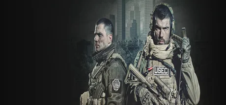

Battlestate Games 的硬核生存撤离射击鼻祖。俄罗斯雇佣兵公司 USEC 与 BEAR 在被封锁的塔科夫城内为利益厮杀。永久装备风险、真实弹道、复杂改装，2025年11月正式登陆 Steam。
想象一座被联合国军用铁丝网封死的俄罗斯港口城市——商场被洗劫一空，海关大楼飘着小雪，海岸度假村堆着没烧完的尸体。这不是末世题材，不是丧尸围城——是 Terra Group 公司一桩商业丑闻引爆的真实地缘冲突缩影。USEC 和 BEAR 两家私军在城里开战，平民拿起冲锋枪变成 Scav。军事写实 × 永久死亡 × Roguelike 装备博弈三套基因撞在一起，造出了过去十年最硬的硬核射击。
你是 USEC 或 BEAR 的PMC 雇佣军——每次进图前都得自己配甲、配枪、塞 IFAK 急救包。身上一套高端配置 200 万卢布，等于你刷三个小时的工资。Customs 海关大宿舍二楼的玻璃后面可能有个新人在抖；Labs 黑色实验室的服务器机房里可能蹲着一个装备千万的金主等着收人头。每一颗子弹都是真钱——7N1 一发 5000 卢布、M995 一发 1.5 万、Igolnik 黑头一发 4 万。你扣下扳机的瞬间，账户就在缩水。
那个刚才还在跟你互喊「Cease Fire」的 Scav，下一秒可能掏枪打掉你 200 万的装备；你在 Reserve 黑骑士尸体上摸到的钨芯弹，会因为撤离前最后一个拐角的脚步声永远回不了 Hideout；那架在头顶嗡嗡飞过的撤离直升机，是你的救赎，也可能是别人埋伏你的信号。这不是关于英雄主义的故事，是关于「你愿意为一把改装 AK 赌上几小时人生」的故事——下一局，你还敢带着满甲进 Labs 吗？
俄式军事写实 × 灰雪冬色，是把苏东工业废墟视觉（STALKER、Metro 2033、潜行者切尔诺贝利）和当代军事写实射击架构融进同一款产品里。底色是熟悉的俄系军事题材——灰雪冬色冷调 + 锈红工业暖斑双色 DNA，海港的铁锈、商场的玻璃、森林的松针。变异在于把买断 + DLC 的硬核 PvPvE用八年抢先体验慢慢打磨——并叠加 Hideout 种田、Flea 真实经济、Wipe 赛季三层运营。整体调性介于《STALKER 切尔诺贝利之影》的诡异荒废和《Modern Warfare》的电影化战场之间。
俄式军事写实射击的视觉演化跨越了二十多年。2002 年《Operation Flashpoint》开创真实弹道军事射击范式；2007 年《S.T.A.L.K.E.R.: Shadow of Chernobyl》把苏东辐射废墟视觉推到行业巅峰，定型了「灰雪 + 锈蚀 + 防毒面具」的俄系美学母版。2010 年《Metro 2033》延续这条脉络，把废土俄罗斯做成了哥特化噩梦。同时期《DayZ》（2013）和《PUBG》（2017）带火了开放世界生存射击。2017 年《逃离塔科夫》进入抢先体验，把撤离 + 装备博弈 + 永久死亡三件事第一次合在一起——成为后续 Hunt、ARC Raiders、Delta Force 撤离模式的共同祖宗。塔科夫走到 1.0 的视觉成果是八年迭代的俄式军事美学集大成。
基于体验清单 · 审美偏好 · IP故事三维度综合选出
点击链接跳转到对应平台查看 · 仅整理外部链接